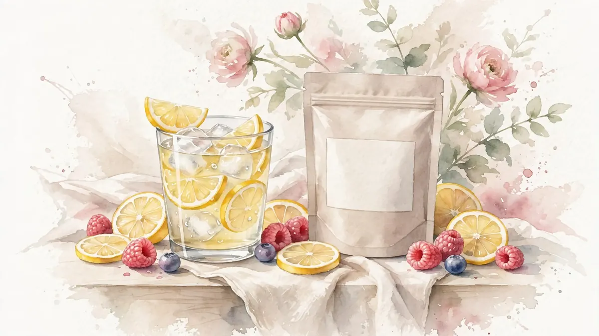

トップ ＞ インナーケア・サプリ ＞ 味と香りで選ぶ、続けやすいタイプ
味と香りで選ぶ、続けやすいタイプ

サプリメントを続けるうえで、意外に大きな要素が「味と香り」です。特に、噛んで食べるタイプ、溶かして飲むタイプ、ドリンクタイプでは、毎日の味の印象が続けやすさを左右します。この記事では、味と香りにまつわる表示の読み方と、選び方の順番を整理します。
味は、パッケージの表記と原材料名で読む
味の情報は、まず商品名やパッケージ表面のフレーバー表記にあります。「レモン味」「ヨーグルト風味」といった書き方です。あわせて見たいのが原材料名と添加物の欄で、甘味料や香料として使われているものの名前が書かれています。甘さの種類や、香りの付け方の傾向は、この欄から読み取れます。
ドリンクタイプや粉末タイプでは、溶かした後の味が想像しにくいこともあります。表示に「水に溶かして」「牛乳などと一緒に」といった飲み方の案内があれば、それも味の手がかりになります。表示から分かるのはここまでで、実際の好みに合うかどうかは、試してみないと分からない部分です。
順番は「試してから、通常サイズ」
味が関わるタイプは、トライアルや少量サイズが用意されていることがあります。まず少量で味と飲み方を確かめ、自分の生活に置けるかを判断してから、通常サイズや大容量に進む。この順番が、買い方の基本です。家族が「おいしい」と言っていても、味覚の感じ方には個人差があります。人の感想は参考程度にし、最終的には自分の感覚で判断してください。
定期購入を考える場合も同じです。初回だけの価格に目が行きがちですが、味が合わなければ続けること自体が難しくなります。味の確認は、価格の確認と同じくらい大切な下調べです。
味が合わないときの工夫と判断
溶かすタイプであれば、案内の範囲で溶かす飲み物を変えてみる、温度を変えてみる、といった工夫の余地があります。それでも合わない場合は、粒タイプなど味の影響が少ない形に切り替える選択肢もあります。
無理に続ける必要はありません。表示を読んで、試して、自分の感覚で決める。この流れが、味と香りで選ぶときの基本です。続けやすい味であることは、立派な選び方の軸のひとつです。
香りの残り方も、生活との相性
味と同じく、香りの強さも生活との相性があります。香りの残るタイプは、職場や外出先で口にする場面では周囲への配慮が要ることもあります。無香料や、香りの控えめなタイプが用意されている商品もあるため、使う場面に合わせて選ぶ視点も大切です。表示では、香料の有無が原材料名や添加物の欄で確認できます。
施術の仕事では、香りは人の印象に直結する要素だと日々感じます。自分の香りの好みだけでなく、「どこで・いつ口にするか」という場面の想像が、味と香りで選ぶときの判断材料になります。試す段階で、実際に使う場面で試してみることも、選び方のコツです。
なお、味の感じ方は、その日の体調や、直前に口にしたものによっても変わります。一度試して合わないと感じても、溶かす飲み物や温度を変えると印象が変わることもあります。それでも合わない場合は、無理をせず、形の違うタイプへ切り替える判断で構いません。
味の表示を読むときは、甘さの種類にも目を向けてください。砂糖なのか、甘味料なのかは、原材料名と添加物の欄で確認できます。甘さの感じ方には個人差がありますが、表示の情報は、試す前の予想を立てる材料になります。
香りについては、開封した瞬間の印象と、口にした後の残り方が違うこともあります。試す段階では、一度だけでなく数日続けてみて、日常の中で気にならないかを確かめるのが現実的です。味と香りは、続ける動機そのものに関わる要素です。
セラフィナ「味の好みは立派な選び方の軸。続けられる味かどうかも表示で確かめよう」